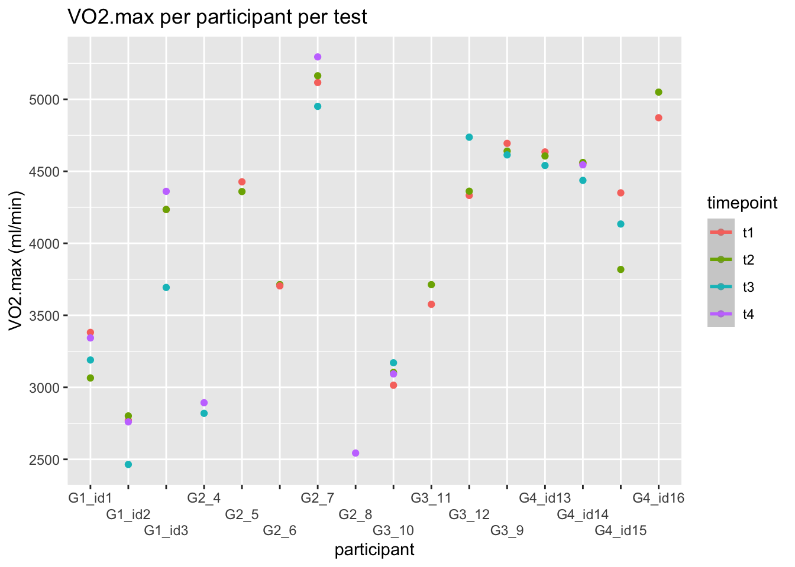

1 Assignment 1: Reliability and tools for reproducible data science
The purpose of this assignment is to present estimates of reliability of measures collected in the physiology lab at Inland Norway University of Applied Sciences. The data is gathered from multiple VO2max tests, where 16 participants performed two till four tests in the time span of 3 weeks. The first two tests were performed within 24 hours of each other during the first week. The last two tests were performed within 48 hours of each other during the third week. We have used Rstudio to analyze the data and to estimate if the performed tests were reliable.
1.1 Method
1.1.1 Standardization pre-test
Same workout regime two days before test day.
Food intake and hydration + caffeine - last two meals should be the same
sleep - same sleeping schedule
same test time for each test
1.1.2 Protocol
- Forbrede plotteark (heime)
- Ta på labfrakk
- Skru på biosen, sjekk standardvæske
- Åpne gass, sjekk at trippel v, står i vyntus, start kalibrering gass på vyntus, sett sammen munnstykke og gjøre klar slange (slange festes til munnstykke på sykkel og til miksekammeret) mens kalibrering pågår (bruk hansker og fest papir på med neseklypa).
- Kalibrer volum
- Sjekke krankarm på sykkel (172,5cm) og riktig pedaltype
- Sette krankarmen rett opp og kalibrere sykkel
- Logg på onedrive-skolekontoen, gjør klart plotteskjema
- Finn frem laktatutstyr. Rør(+ekstra) teip og papir
- Ta imot og måle vekta på utøver
- Legg til info om ny person på vyntus: idr4000_h24_g3_test(x), vekt, høyde, kjønn, fødselsdato, eller bruke eksisterande bruker om det er registret frå før og endre vekta
- Legg til info om ny person på lode-pcn: idr4000_h24_g3_test(x), vekt, høyde, kjønn, fødselsdato, eller bruke eksisterende bruker om det er registrert før
- Stille sykkel så det ser bra ut og er behagelig for utøver
- Gi litt watt til utøver for oppvarming (10-13 på borg skala i 5min)
- Skru på vifte om deltaker ønsker
- Gå inn på måling, sjekke at det står medium på munnstykke, 30sek målinger, pulsbeltet koblet til.
- Informere om at testen kommer til å foregå trappetrinsvis ved økninger i watt per min (20w for damer og 25w for menn) og at målet skal vere å sykle til det ikkje går lenger, at det blir målinger hvert 30sek og at man skal sitte gjennom hele testen, og forklare borg skala
- Gå fra check phase til test phase i vyntus
- Starte testen ved å trykke på klokka og sykkel pc etter 1min er gått i vyntus
- Informere om økninger og målinger underveis i testen
- Motivere og pushe
- Se på tid, watt og makspuls ved slutten av testen, spørre etter borg – notere ned i plotteark
- Ta laktat 1 min etter utøver ga seg
- Måle laktat i biosen og plotte inn i plotteark
- Passe på at det går bra med utøver
- Stoppe test i vyntus
- Lagre data på sykkel-pc
- Vaske rør, munnstykke og sykkel
- Bruke vifta til å tørke miksekammeret
- Plotte verdier fra vyntus
- Lagre vyntusfil i minnepenn og over i onedrive på lab pc
- Bytte fra minnepenn til bluetooth-kobleren til pulsbeltet
- Lagre plotteskjema
- Ta ut av cidex
- Sette biosen i stand by om vi er siste igjen i labben
1.2 Results
1.2.1 Figur 1
Figur 1 viser det absolutte maksimale oksygenopptaket til hver enkelt deltaker, sammenlignet med alle testene som ble gjennomført til alle deltakerne.
1.2.2 Tabell 1
| id | t1 | t2 | t3 | t4 |
|---|---|---|---|---|
| G1_id1 | 3381.5 | 3065.0 | 3190.0 | 3343.0 |
| G1_id2 | 2771.0 | 2801.5 | 2464.5 | 2760.0 |
| G1_id3 | 4234.5 | 4235.0 | 3693.5 | 4361.0 |
| G2_4 | NA | NA | 2819.5 | 2893.0 |
| G2_5 | 4427.0 | 4359.5 | NA | NA |
| G2_6 | 3704.5 | 3713.5 | NA | NA |
| G2_7 | 5116.5 | 5163.5 | 4951.0 | 5294.5 |
| G2_8 | NA | NA | NA | 2543.5 |
| G3_9 | 4694.0 | 4640.5 | 4614.0 | NA |
| G3_10 | 3014.5 | 3103.5 | 3170.5 | 3093.0 |
| G3_11 | 3576.5 | 3713.0 | NA | NA |
| G3_12 | 4332.5 | 4362.0 | 4737.0 | NA |
| G4_id13 | 4634.5 | 4606.5 | 4540.5 | NA |
| G4_id14 | 4556.5 | 4561.5 | 4437.0 | 4545.0 |
| G4_id15 | 4350.5 | 3818.5 | 4134.0 | NA |
| G4_id16 | 4872.0 | 5050.0 | NA | NA |
Tabell 1 viser det samme som “Figur 1”, men her kan man lettere se hvor mange tester hver enkelt deltaker har gjennomført og hvilket resultat som hører til hvilken test.
1.2.3 Beregning av standardfeil mellom test 1 og test 2
| mean | sd | te | cv |
|---|---|---|---|
| 4,102.1 | 183.5 | 129.8 | 3.2 |
1.2.4 Beregning av standardfeil mellom test 3 og test 4
| mean | sd | te | cv |
|---|---|---|---|
| 4,102.1 | 240.9 | 170.3 | 4.2 |
We calculated that the
Vi kalkulerte at variasjonskoeffisienten (CV) for test 1 og test 2 ble 3.16%. I følge Dr. Will G. Hopkins indikerer en variasjonskoeffisient (CV) på under 5% god reliabilitet (hopkins2000a?). Det vil si at resultatene for test 1 og test 2 har relativt lav variabilitet og bør betraktes som reliable. For test 3 og test 4 kalkulerte vi at variasjonskoeffisienten (CV) ble 4.2%. Det vil si at også resultatene for test 3 og test 4 kan betraktes som reliable, men har mer variabilitet enn resultatene fra test 1 og test 2 da variasjonskoeffisienten er noe høyere.